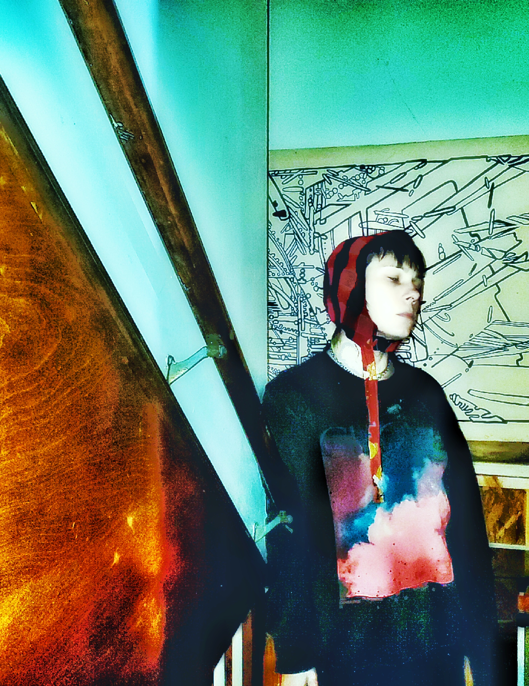
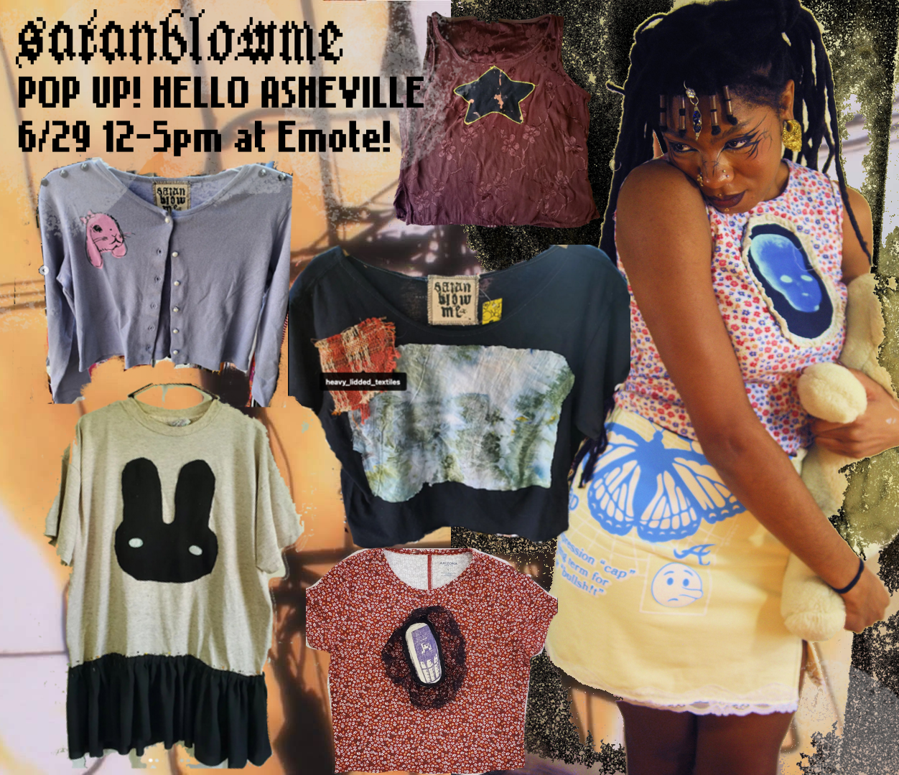

winter 2025 / summer 2026
the neck & torso collection:
upcycling tshirts, apex studies by creating shapes to form cups, studies of the femme torso with latex material, latex neck pieces, and other neckwear pattern-drafting.

summer 2024
the sustainability collection:
upcycling in the form of basic alterations, applique, and a simplistic foray into pattern drafting.